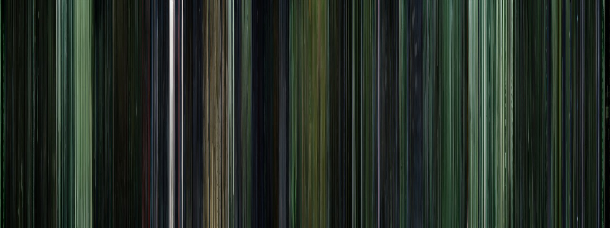
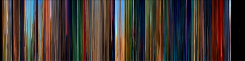
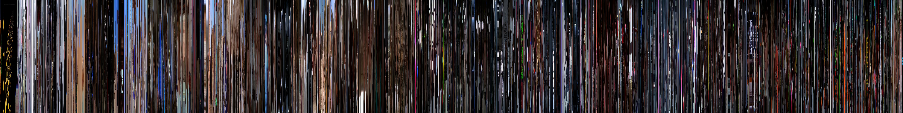
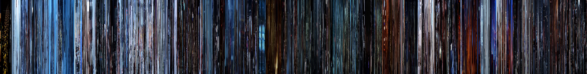
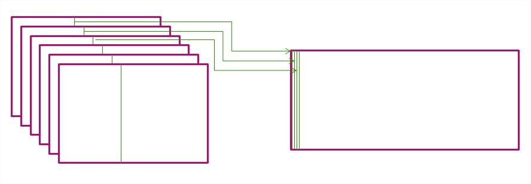

|
In order to get a gist of what is in a movie you have to watch it all, even if in fast forward. What if there was a way to get an idea of what is in there, all at once? Well, there sort of is... Movie Barcodes! We get an overview of an entire movie in a single image! Here is "The Matrix" (from Movie Barcodes. Notice the dark tones. That trademark green showing up again and again. Quite a lot, from a single image.  You can, in fact, do a good analysis of movies based on these "barcodes". The following are contributions from previous years. Contrast the Matrix, above (a dark, dystopian movie) with the Lion King, below:  And can you tell which of these is "Star Wars Episode 4 - A New Hope" and "Star Wars - Episode 5 - The Empire Strikes Back?". The frozen plains of Hoth are unmistakeable!.   These are made using a variant of slit-scanning. Get a line at the same position for each frame in a movie and put them together in a single image. Now the X-Axis has become a proxy for time!  Your task is to choose a movie and get its barcode, using the method described above. The post the image and comment. What could you find? Maybe the movie becomes darker with time? Perhaps an explosion results in a column of yellow? What is there? Want to make it more interesting? Do it for a sequel or trilogy. How did it evolve? Is the sequel "darker" than the original? Are movies from different decades different? Does the pace of a movie show? Be creative! There are tools online to do this kind of thing, including a coupe Processing sketches you can adapt for this (here and here, for instance). You may want to carefully choose the frame sampling rate based on desired image width. As usual, we expect a quality result and discussion, and may ask for improvements/changes before accepting the result, especially if the quality or originality requirements aren't met. |